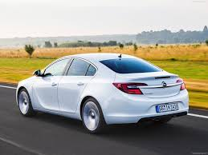

Sobre el Opel Insignia
El Opel Insignia es una berlina elegante y moderna que combina rendimiento, tecnología y confort. Con su diseño aerodinámico y su interior espacioso, el Insignia ofrece una experiencia de conducción premium dentro de la gama Opel. Elegir este coche, les permitiria ir comodo, y tener asientos deportivos, tiene una suficiente potencia, para poder correr, nuestro coche coge 300km/h facilmente. Y si elige nuestro coche, nunca se arrepentira, y tendra muy pocos fallos, solo tendria que cambiar aceite, los discos de freno y los neumaticos

Concesionario Opel en Valencia
Nuestro Concesionario, esta en una de las calles,más populares de Valencia, donde pasa mucha gente para ir al trabajo, estar en esta zona ubicados nos ayuda a que la gente, se interese en nutros preciosos coces de lujo, los elija, y tenga el mejor coche del mercado, les permitiria probarlo, y les daria toda la información que necesiten, y tambien, les ofreceriamos el servicio, de llevar el coche al taller de confianza nuestro, y le cobrariamos lo mínimo
Video del Opel Insignia
Si usted mira el video, se fijara que es un coche bonito, familiar, tiene 5 puertas, motor diesel o gasolina, como ustededs prefieran, tiene luces led xenon, que les permite por la noche ver mejor al conducir, tiene una dirección muy buena, y tiene un motor sorprendenteme grande y con mucha potencia, nuestro vehiculo, corre 300km/h. Este coche se usa para un coche familiar, y tambien lo utilizan para correr con el en circuitos, y para correr en circuitos, se necesitan el mejor coche, y si han elegido esta opcion sería por algo. En conclusión yo no dudaria en comprarme este coche. Es el coche que todo el mundo quiere tener.